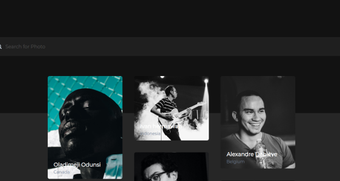
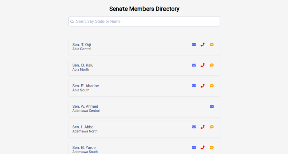
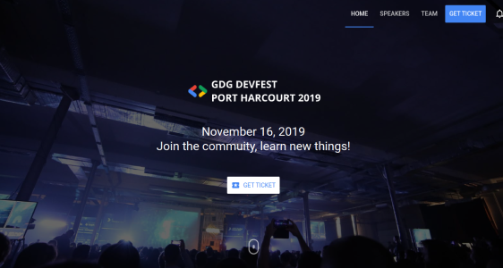

Projects
Shortly
Shortly is a URL shortener service where users get to shorten long links. It was build with React and Sass. The authentication system was implemented with magic links
View Project View Code on GitHub
SamaSplash
This is an a lightweight unsplash clone. It allows users to search and view high quality photos. It was built with React and Chakra UI
View Project View Code on GitHub
Senate Members Directory
Senate Members Directory was a social media challenge. I had 24 hours to come up with a way for Nigerian citizens to contact there senators as there wasn't any public directory available. The project was built with React and Algolia Instant Search
View Project View Code on GitHub
GDG DevFest Port Harcourt 2019
This is the web app for the GDG DevFest Port Harcourt 2019. It was built with Polymer and Firebase
View Project View Code on GitHub